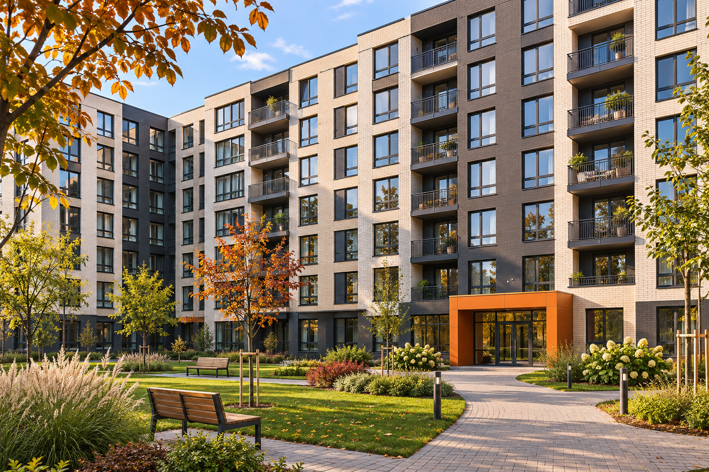
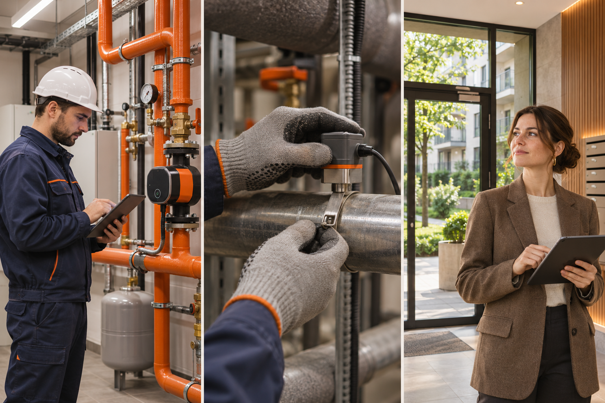

Несподівана зупинка
Про проблему з опаленням чи ліфтом дізнаються від мешканців.
БУДІВЛІ В УКРАЇНІ. ПІД ВАШИМ КОНТРОЛЕМ.
Менше невідомого.
Більше спокою за свій дім.
Стан обладнання, показники датчиків і заявки на обслуговування — в одному місці. Для тих, хто щодня дбає про будівлі та людей.

ЗНАЙОМА СИТУАЦІЯ?
Коли інформація розкидана між журналами, дзвінками та чатами, важливе легко пропустити.
Про проблему з опаленням чи ліфтом дізнаються від мешканців.
Показники є, але складно швидко зрозуміти, що потребує уваги.
Незрозуміло, хто відповідає за роботу і на якому вона етапі.
ПРОСТЕ РІШЕННЯ НА ЩОДЕНЬ
Починаємо з основи: дані з обладнання, зрозумілі сповіщення та порядок у завданнях.
Перевіряємо наявні датчики й лічильники. Узгоджуємо обладнання, з якого можна отримувати дані.
Збираємо показники на панелі. Відхилення від погоджених порогів допомагають визначити, що перевірити.
Фіксуємо звернення, відповідального та статус. Історія обслуговування залишається поруч з обладнанням.
Склад функцій і сумісність обладнання погоджуємо перед підключенням.
НАШІ КЛІЄНТИ — ТУТ, В УКРАЇНІ
Окремий робочий простір для тих, хто керує будівлею, і тих, хто відповідає за її стан.
Єдина картина стану будівель громади. Об’єкти, звернення та відповідальні — поруч.
Портфель громадських будівельШколи, садочки та лікарні. Зручний контроль інженерних систем у щоденній роботі.
Турбота про людей і простірСвій будинок, його обладнання та заявки мешканців. Зрозуміло для голови ОСББ і техніка.
Житлові будинки та комплексиБізнес-центри й торгові центри. Обладнання, технічні служби та заявки в одному просторі.
Комерційна нерухомістьВЕБКАБІНЕТ + МОБІЛЬНИЙ ЗАСТОСУНОК
За робочим столом або дорогою на об’єкт — інформація про будівлю завжди під рукою.
Переглянути всі екрани ↗ВІД ОБ’ЄКТА ДО ЕКРАНА
Від знайомства з об’єктом до щоденного контролю: огляд систем, підключення датчиків і робота з показниками.

Огляд систем і доступних даних
Перевірка сумісності та налаштування
Показники та завдання для команди
ПІЛОТ ДЛЯ ВАШОГО ОБ’ЄКТА
Рахуємо датчики в межах усього проєкту. Пілот триває 60 днів. Тариф визначає кількість датчиків, а обсяг підключення та кошторис погоджуємо після огляду об’єкта.
Для першого об’єкта або групи будівель із базовим набором систем.
Для більшого портфеля будівель і складнішої структури інженерних систем.
ПЕРЕД СТАРТОМ
Спочатку перевіряємо обладнання, яке вже є. Якщо дані недоступні або датчиків недостатньо, обговорюємо додаткове обладнання окремо.
Знайомимося з будівлею, погоджуємо системи та кількість датчиків, перевіряємо підключення і налаштовуємо робочий простір. Тривалість і критерії перевірки фіксуємо перед стартом.
У базовому сценарії йдеться про читання показників, сповіщення та облік завдань. Рішення щодо ремонту й роботи обладнання ухвалює відповідальний фахівець.
У розділі «Демо» оберіть роль ОСББ або керуючої компанії та перемикайтеся між будинком, обладнанням і заявками. Щоб обговорити підключення вашого об’єкта, залиште запит у формі нижче.
ПОЧНЕМО З ВАШОЇ БУДІВЛІ
Допоможемо обрати тариф і визначити умови підключення вашого об’єкта.
digitalbuilding@gmail.com ↗+380 67 923 22 33 ↗Географія роботиУкраїна
Адресам. Київ, вул. Ділова, 10
ВІДГУКИ
Ваш зворотний зв’язок допомагає робити сервіс зручнішим. Розкажіть про свій досвід роботи з Digital Building Engineer.
Поділитися відгуком ↗